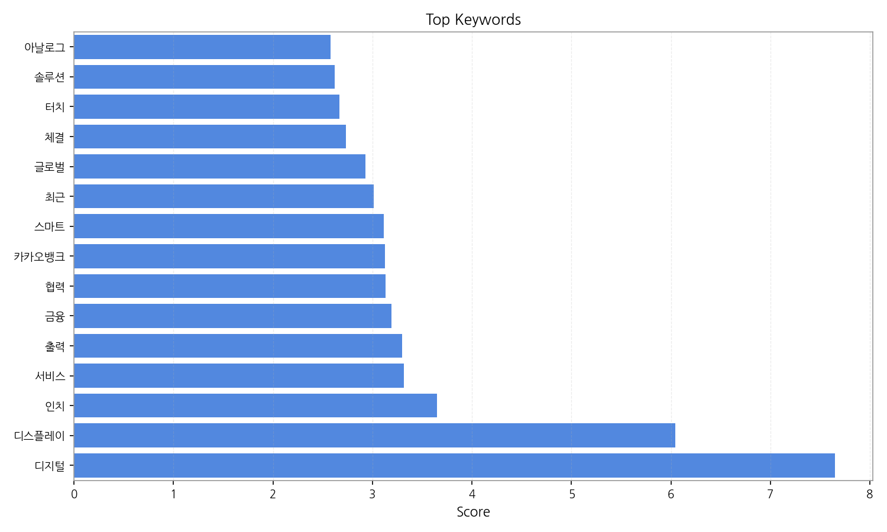
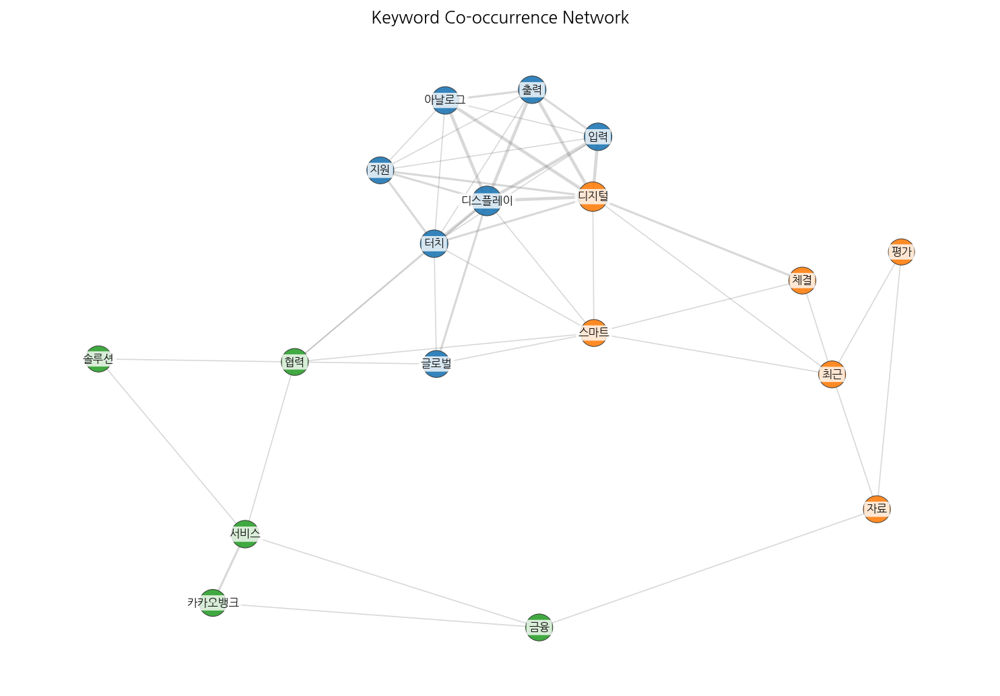
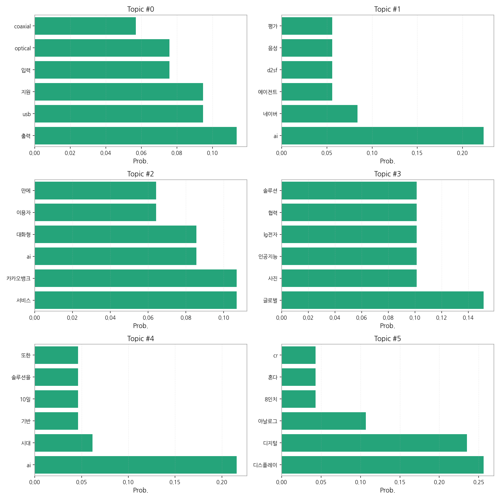
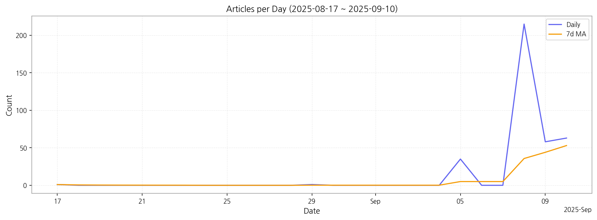

1) 상위 토픽을 3개 주제로 묶어 핵심 맥락을 설명하면 다음과 같습니다. 첫째, AI 기술 발전과 관련된 주제(topic 1, 2, 4)는 네이버, 카카오뱅크 등 국내 기업의 AI 서비스 출시 및 AI 에이전트, 대화형 AI 등의 기술 개발 동향을 보여줍니다. 둘째, 디스플레이 기술 및 하드웨어 관련 주제(topic 0, 5)는 USB 출력 지원, 터치 기능 등의 디스플레이 사양과 관련된 뉴스와 디지털, 아날로그 디스플레이 기술 발전에 대한 기사들이 주를 이룹니다. 마지막으로, 글로벌 기업과의 협력 및 기술 솔루션 관련 주제(topic 3)는 LG전자, 네이버클라우드, SK하이닉스 등 국내 기업의 글로벌 협력을 통한 인공지능 솔루션 개발 및 사진 관련 기술 협력 등을 다룹니다.
2) 최근 변화/스파이크를 살펴보면, 9월 5일부터 9월 8일 사이에 기사 수가 급격하게 증가(1일 35건에서 215건으로 증가)한 것을 확인할 수 있습니다. 이는 특정 기술 발표나 이벤트, 혹은 관련 뉴스 보도의 집중적인 발생으로 인한 것으로 추정됩니다.
3) 실무 인사이트 3가지:
| Rank | Keyword | Score |
|---|---|---|
| 1 | 디지털 | 7.647 |
| 2 | 디스플레이 | 6.042 |
| 3 | 인치 | 3.646 |
| 4 | 서비스 | 3.318 |
| 5 | 출력 | 3.299 |
| 6 | 금융 | 3.193 |
| 7 | 협력 | 3.131 |
| 8 | 카카오뱅크 | 3.126 |
| 9 | 스마트 | 3.115 |
| 10 | 최근 | 3.015 |
| 11 | 글로벌 | 2.928 |
| 12 | 체결 | 2.733 |
| 13 | 터치 | 2.666 |
| 14 | 솔루션 | 2.621 |
| 15 | 아날로그 | 2.577 |




1) 상위 토픽을 3개 주제로 묶어 핵심 맥락을 설명하면 다음과 같습니다. 첫째, AI 기술 발전과 관련된 주제(topic 1, 2, 4)는 네이버, 카카오뱅크 등 국내 기업의 AI 서비스 출시 및 AI 에이전트, 대화형 AI 등의 기술 개발 동향을 보여줍니다. 둘째, 디스플레이 기술 및 하드웨어 관련 주제(topic 0, 5)는 USB 출력 지원, 터치 기능 등의 디스플레이 사양과 관련된 뉴스와 디지털, 아날로그 디스플레이 기술 발전에 대한 기사들이 주를 이룹니다. 마지막으로, 글로벌 기업과의 협력 및 기술 솔루션 관련 주제(topic 3)는 LG전자, 네이버클라우드, SK하이닉스 등 국내 기업의 글로벌 협력을 통한 인공지능 솔루션 개발 및 사진 관련 기술 협력 등을 다룹니다.
2) 최근 변화/스파이크를 살펴보면, 9월 5일부터 9월 8일 사이에 기사 수가 급격하게 증가(1일 35건에서 215건으로 증가)한 것을 확인할 수 있습니다. 이는 특정 기술 발표나 이벤트, 혹은 관련 뉴스 보도의 집중적인 발생으로 인한 것으로 추정됩니다.
3) 실무 인사이트 3가지:
| Idea | Target | Value Prop | Score |
|---|---|---|---|
| AI 기반 디스플레이 맞춤형 광고 플랫폼 | 대형 쇼핑몰, 백화점, 영화관 등 디지털 사이니지를 운영하는 기업 및 광고주 (중견/대기업) | AI 기반 실시간 타겟팅 광고 및 효과 측정 시스템을 제공하여 광고 효율을 극대화합니다. 다양한 디스플레이 환경(크기, 해상도, 위치 등)에 맞춰 광고를 자동으로 최적화합니다. 경쟁사 대비 정확한 타겟팅과 효과 측정으로 ROI를 높입니다. | 4.50 |
| AI 기반 디스플레이 제품 추천 시스템 | 온라인 디스플레이 판매 플랫폼 운영사, 전자제품 유통업체 (중소/중견기업) | AI 기반 개인 맞춤형 디스플레이 제품 추천 서비스를 제공하여 소비자의 구매 결정을 지원합니다. 소비자의 선호도, 사용 목적, 예산 등을 고려하여 최적의 제품을 추천합니다. 경쟁사 대비 정확하고 빠른 추천으로 고객 만족도를 높입니다. | 4.00 |
| 스마트 디스플레이 기반 원격 의료 솔루션 | 중소병원, 의료기관, 원격 진료 플랫폼 운영사 (중소/중견기업) | 고화질 스마트 디스플레이와 안정적인 통신 기술을 기반으로 고품질 원격 진료 서비스를 제공합니다. 환자의 생체 정보를 실시간으로 모니터링하고 의료진에게 전달하여 신속한 진료를 지원합니다. 경쟁사 대비 높은 화질과 안정적인 통신으로 진료 만족도를 높입니다. | 3.50 |
| AI 기반 디스플레이 제조 공정 최적화 솔루션 | 디스플레이 제조 기업 (대기업) | AI 기반 머신러닝 알고리즘을 활용하여 디스플레이 제조 공정을 최적화합니다. 실시간 데이터 분석을 통해 불량률을 예측하고, 생산성을 향상시킵니다. 경쟁사 대비 높은 정확도의 예측 및 최적화로 생산 효율을 높입니다. | 3.00 |
| 맞춤형 디지털 사이니지 콘텐츠 제작 플랫폼 | 중소기업, 소상공인, 프랜차이즈 본사 (중소기업) | 사용자 친화적인 인터페이스를 통해 누구나 쉽게 디지털 사이니지 콘텐츠를 제작하고 관리할 수 있는 플랫폼을 제공합니다. 다양한 템플릿과 편집 도구를 제공하여 전문적인 지식 없이도 고품질 콘텐츠 제작이 가능합니다. 경쟁사 대비 저렴한 비용과 편리한 사용성으로 콘텐츠 제작 부담을 줄입니다. | 2.50 |